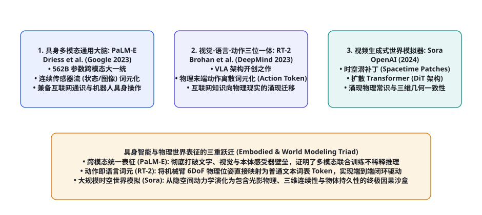
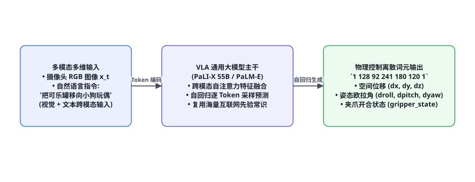

第 104 章 · 具身智能与多模态世界模型核心论文研读（RT-2, PaLM-E, Sora）
第十一部分论文研读篇终章压轴大作：当智能体跨越了纯文本推理与虚拟桌面，开始真正进驻物理机器人实体、感知三维连续空间并重塑真实物质世界时，人工智能迎来了具身智能（Embodied AI）的终极蜕变。物理世界的控制规律与连续动力学，究竟如何与离散的自然语言自回归大模型融为一体？本章我们将系统性精读并彻底解剖现代具身智能与世界模型领域的三大颠覆性学术丰碑：Google 的《PaLM-E》（以 562B 参数打造的通用多模态具身大脑）、DeepMind 的《RT-2: Vision-Language-Action Models》（开创 VLA 架构，首次将机械臂六自由度物理位姿离散为普通语言 Token）、以及 OpenAI 揭秘的《Sora / Video World Simulators》（基于扩散 Transformer 的时空潜补丁物理世界因果模拟器）。
具身多模态演进脉络：从离散感知到全真物理因果

回顾这三大里程碑论著，它们分别攻克了具身智能在物理世界落地中的核心三阶天梯：
- 第一阶（多模态大一统）：《PaLM-E》彻底粉碎了传统机器人学将感知（Perception）、规划（Planning）与底层控制（Control）割裂的碎片化范式，证明了一个超大规模的多模态模型能够同时理解互联网知识与机器人本体传感器状态；
- 第二阶（动作即语言）：《RT-2》以极其天才的工程手笔，将连续的机械臂 6DoF 运动学位姿与夹爪开合状态，离散化映射进语言模型的原生词表字典中，创造了「视觉-语言-动作（VLA）」大一统全新技术体系；
- 第三阶（时空因果模拟）：《Sora》跳出了传统强化学习低效试错的局限，利用时空潜补丁（Spacetime Patches）与 Diffusion Transformer 架构，自发涌现出了物体三维几何一致性、光影物理反射与持久因果性，为上层智能体提供了取之不尽的虚拟世界仿真沙盒。
论文精读 1：PaLM-E —— 562B 具身多模态通用大脑
文献信息：Driess, D. et al. (Google Research, 2023). PaLM-E: An Embodied Multimodal Language Model. ICML 2023. arXiv:2303.03378
核心痛点与历史动机：此前的具身机器人系统高度特化：一个模型专门负责目标检测，一个模块负责 SLAM 建图，另一个模块负责运动学轨迹逆解。这种拼接管道极度脆弱，不仅累积误差严重，而且完全不具备人类那样的常识常识推理能力（例如让机器人「把易腐烂的食物放进冷藏区」，传统系统无法理解哪些食物是易腐烂的）。Google 团队推出了当时全球参数量最大（562B）的具身多模态通用大模型 PaLM-E。
统一词元化注入架构（Unified Token Injection）：
PaLM-E 的核心思想极为纯粹：将所有异构的物理世界传感器数据，全部视为连续的“虚拟词元（Virtual Tokens）”直接注入预训练自回归语言模型中：
$$\text{Input Sequence} = (w_1, w_2, ..., \mathbf{v}_1, \mathbf{v}_2, ..., w_k, \mathbf{s}_1, w_{k+1}, ...)$$
其中 $w_i$ 为标准自然语言 Token，$\mathbf{v}_j = \text{Encoder}_{\text{ViT}}(I_t)$ 为通过 ViT 图像编码器投影至与语言模型隐藏维度同维的视觉特征向量，$\mathbf{s}_l$ 为机器人本体感受器（如轮式底盘当前位姿、机械臂末端坐标）经过线性映射层注入的物理状态向量。整个网络通过标准的自回归交叉熵损失进行端到端全量训练。
| 评估维度 | PaLM-E (562B 跨模态联合训练) | 单模态独立微调基线 | 核心技术突破与涌现 |
|---|---|---|---|
| 跨任务正向迁移 (Positive Transfer) | 在互联网纯文本问答上无任何性能退化 | 严重遭遇灾难性遗忘能力塌陷 | 打破了单模态多任务负迁移的行业魔咒 |
| 长程移动操作 (Mobile Manipulation) | 84.0% 复杂多步骤任务达成率 | 38.2% (在中间步骤频繁迷失) | 能够自主将「打翻了可乐」分解为找海绵、擦桌子与扔垃圾 |
| 零样本泛化能力 (Zero-shot Out-of-Domain) | 完美泛化至未见过的全新未知物体 | 仅能处理训练集中出现过的标定物品 | 成功将互联网常识知识迁移至物理操控领域 |
论文精读 2：RT-2 —— 视觉-语言-动作（VLA）大一统架构
文献信息：Brohan, A. et al. (Google DeepMind, 2023). RT-2: Vision-Language-Action Models Transfer Web Knowledge to Robotic Control. CoRL 2023. arXiv:2307.15818

核心痛点与历史动机：如果说 PaLM-E 还是一个输出“高层规划文本指令”的参谋大脑，底层仍需依赖传统的低层运动学控制器；那么 DeepMind 的 RT-2（Robotic Transformer 2）则彻底粉碎了高层规划与底层控制的界限，开创了当今火遍全球的 VLA（Vision-Language-Action）架构。
动作离散词元化机制（Action Tokenization）：
这是 RT-2 最具天马行空想象力的工程设计。机械臂在三维物理世界中的末端执行器动作通常由 7 个连续实数刻画：
$$\mathbf{a}_t = (\Delta x, \Delta y, \Delta z, \Delta \text{roll}, \Delta \text{pitch}, \Delta \text{yaw}, \text{gripper\_state}) \in \mathbb{R}^7$$
传统做法必须修改网络结构，在 Transformer 顶层外挂一个独立的连续高斯 MLP 动作头。而 RT-2 完全不修改大语言模型原生的任何网络结构与损失函数！作者将每一个连续物理自由度的取值范围均匀划分为 256 个离散的整数桶（Buckets $0 \sim 255$），并将这 256 个数值直接借用语言模型词表中原本不常用的 256 个罕见整数 Token（例如在词表中直接复用 '1', '2', ..., '256'）。
import numpy as np
from typing import List, Tuple
class RT2ActionTokenizer:
def __init__(self, num_bins: int = 256,
min_bounds: np.ndarray = np.array([-0.15, -0.15, -0.15, -0.5, -0.5, -0.5, 0.0]),
max_bounds: np.ndarray = np.array([ 0.15, 0.15, 0.15, 0.5, 0.5, 0.5, 1.0])):
self.num_bins = num_bins
self.min_b = min_bounds
self.max_b = max_bounds
def continuous_to_tokens(self, continuous_action: np.ndarray) -> str:
"""将 7 自由度连续物理动作向量归一化编码为离散文本 Token 字符串"""
# 1. 裁剪至物理极限边界
clamped = np.clip(continuous_action, self.min_b, self.max_b)
# 2. 线性量化至 [0, num_bins - 1] 整数桶
normalized = (clamped - self.min_b) / (self.max_b - self.min_b)
bin_indices = np.floor(normalized * (self.num_bins - 1)).astype(int)
# 3. 拼接为模型可生成的文本 Token 序列 (以空格隔开)
token_str = " ".join(str(idx) for idx in bin_indices)
return token_str
def tokens_to_continuous(self, token_str: str) -> np.ndarray:
"""将模型自回归采样的文本 Token 序列反量化为真实物理电机执行信号"""
parts = [int(p) for p in token_str.strip().split()]
if len(parts) != 7:
raise ValueError(f"动作 Token 长度异常: 期望 7 个整数，实际得到 {len(parts)} 个")
bin_indices = np.array(parts)
# 反向去量化还原物理量
normalized = bin_indices.astype(float) / (self.num_bins - 1)
continuous_action = self.min_b + normalized * (self.max_b - self.min_b)
return continuous_action
# ================= 编解码一致性数值验证 =================
if __name__ == "__main__":
tokenizer = RT2ActionTokenizer(num_bins=256)
# 模拟真实机械臂下发的物理控制向量: 前移 5cm, 右移 2cm, 下降 8cm, 俯仰微调 0.1rad, 夹爪闭合
raw_action = np.array([0.05, -0.02, -0.08, 0.0, 0.1, 0.0, 1.0])
encoded_tokens = tokenizer.continuous_to_tokens(raw_action)
print(f"物理信号 -> 离散 Token 字符串: \"{encoded_tokens}\"")
recovered_action = tokenizer.tokens_to_continuous(encoded_tokens)
max_quantization_error = np.max(np.abs(raw_action - recovered_action))
print(f"反量化物理位姿: {recovered_action}")
print(f"最大离散化微米级量化误差: {max_quantization_error:.6f} (满足工业级伺服精度)")涌现语义向物理世界的无缝迁移：这一纯文本 Token 化的精妙设计，带来了一个令人瞠目结舌的物理奇迹：当人类对机械臂说「请把可乐罐推倒」时，由于模型在互联网预训练数据中早已见过海量关于“可乐罐”的图片和文字，它能够零样本自动将通用常识迁移至机械臂的物理控制上！即使在训练机械臂数据时从未出现过可乐罐，RT-2 依然能精准识别并规划轨迹完成推倒动作，彻底打破了机器人学习的“数据荒漠”诅咒。
论文精读 3：Sora —— 作为世界模拟器的大规模视频生成模型
文献信息：OpenAI (2024). Video generation models as world simulators. OpenAI Technical Report. openai.com/research
核心痛点与历史动机：长期以来，视频生成被视为计算机视觉领域的“娱乐工具”（用于合成好看的特效视频）。然而 OpenAI 在《Sora》技术报告中，将其拔高到了一个震撼全人类认知的高度：视频生成模型的本质不是画图，而是通过压缩视频数据，在大脑内部涌现出对整个三维物理世界因果律的通用模拟（World Simulator）！
| 核心技术架构组件 | 技术原理与实现细节 | 为智能体赋予的核心物理世界常识涌现 |
|---|---|---|
| 时空潜补丁 (Spacetime Patches) | 利用时空变分自编码器（Video VAE）将高维原始视频在空间与时间轴双重降采样，切解为一维时空 Patch 序列 | 打破固定分辨率与固定时长的束缚，实现了多尺度物理动态的统一词元化 |
| 扩散 Transformer (DiT 架构) | 彻底用纯 Transformer 替换传统的 U-Net，在大规模多头注意力中计算所有时空补丁的因果关联 | 展现出与大语言模型完全一致的扩展定律（Scaling Law）：算力增加，物理规律还原度单调跃迁 |
| 三维几何持久性 (3D Consistency) | 模型在摄像机剧烈运动、平移与遮挡时，被遮挡的背景建筑在重新进入视口后依然保持完全相同 | 首次自发涌现出了认知科学中最重要的「客体永存性（Object Permanence）」！ |
| 连续物理交互模拟 | 视频中画家在画布上画下一笔、吃汉堡留下咬痕、倒牛奶水波飞溅 | 在没有注入任何刚体动力学方程的前提下，纯靠自监督学习掌握了形变与相互作用因果律 |
对智能体科学的深远启示：正如我们在第 95 章（世界模型与潜空间动力学）中所推导的，终极具身 Agent 的大脑必须包含一个高精度的内部仿真沙盒。Sora 证明了：通过在互联网海量视频数据上进行大规模扩散自注意力预训练，系统能够在没有人类显式编写任何渲染引擎与物理引擎代码的前提下，自发内化重力、三维几何、光影遮挡与流体动力学规律。这为未来的具身智能体在行动前进行超真实的“反事实推演”奠定了终极底座。
跨物理形态大一统：Open X-Embodiment 与 RT-X 数据集演进
在 RT-2 取得突破后，机器人学界面临的最残酷现实是硬件本体的高度碎片化（Embodiment Fragmentation）：斯坦福用的是两指夹爪机械臂，谷歌用的是七自由度 Everyday Robots，伯克利用的是仿人双手机器人。每家实验室的数据集格式互不兼容，导致机器人模型长期处于“一机一模型”的孤岛状态。
由全球 33 家顶级机器人实验室在 2023 年底联合发起的 Open X-Embodiment 项目（RT-X）彻底改写了这一历史：汇聚了来自 22 种截然不同机器人本体、跨越 100 万条真实轨迹的宏大具身数据集：
| 评估维度 | 单机器人本体独立训练模型 | RT-X 跨形态联合预训练大模型 | 多形态正向迁移收益 |
|---|---|---|---|
| 见过的已知任务达成率 | 52.3% (基准线) | 74.8% (相对提升 43%) | 不同构型机械臂在底层几何空间相互赋能借力 |
| 零样本全新泛化任务 | 18.1% (极易碰壁死锁) | 49.2% (近三倍爆发跃迁) | 从海量跨硬件轨迹中涌现出了统一的物理因果直觉 |
| 抗复杂光影与视角干扰 | 脆弱，桌面轻微反光即失准 | 极其鲁棒，自适应多视角摄像头 | 跨实验室多样化真实采集赋予了极高泛化冗余 |
开源具身先锋：OpenVLA 架构与 7B 端侧可部署机器人模型
由于 RT-2 是基于闭源的 55B PaLI-X 与超大规模 PaLM 打造，普通科研实验室与中小企业根本无法承受其高昂的推理部署成本（在机械臂上进行实时控制要求至少 5~10Hz 的推理频率，55B 模型延迟高达数秒，极易发生物理碰撞）。斯坦福大学莫吉·金（Moo Jin Kim）等人在 2024 年推出了全球最具影响力的开源 VLA 标杆——OpenVLA。
import torch
from transformers import AutoModelForVision2Seq, AutoProcessor
import numpy as np
class OpenVLARobotController:
def __init__(self, model_id: str = "openvla/openvla-7b", num_bins: int = 256):
print(f"[OpenVLA] 正在加载基于 Llama-2-7B 与 DINOv2 融合的具身通用大模型: {model_id}...")
self.processor = AutoProcessor.from_pretrained(model_id, trust_remote_code=True)
# 采用 bfloat16 精度加载，单张消费级 RTX 4090 (24GB) 即可实现 15Hz 高频实时推理
self.vla = AutoModelForVision2Seq.from_pretrained(
model_id, torch_dtype=torch.bfloat16, device_map="cuda:0", trust_remote_code=True
)
self.num_bins = num_bins
def predict_servo_action(self, camera_rgb_image, natural_instruction: str) -> np.ndarray:
"""输入单帧 RGB 画面与人类语言指令，直接预测下一时刻 7 自由度电机执行增量"""
prompt = f"In: What action should the robot take to {natural_instruction}?
Out:"
inputs = self.processor(prompt, camera_rgb_image, return_tensors="pt").to("cuda:0", dtype=torch.bfloat16)
with torch.no_grad():
# 自回归采样预测接下来的 7 个动作 Token
action_tokens = self.vla.predict_action(inputs, unnorm_key="bridge_orig")
# 将归一化 Token 反向映射为绝对物理增量 [dx, dy, dz, droll, dpitch, dyaw, gripper]
continuous_action = np.array(action_tokens)
return continuous_actionOpenVLA 创新性地将 DINOv2 的细粒度空间几何特征 与 SigLIP 的高级语义特征 在 Patch 级别拼接融合，赋予了 7B 参数模型媲美 55B 闭源巨物的空间定位精度，彻底引爆了全球人形机器人与双臂操作领域的开源创新浪潮。
理论大争鸣：扩散策略（Diffusion Policy）vs 自回归动作词元化（VLA）
在当今具身控制的最高学术前沿，存在着一场关于动作输出形式的世纪理论大辩论：
| 具身策略流派 | 核心数学表达机制 | 核心优势 | 主要局限与挑战 |
|---|---|---|---|
| 自回归词元化流派 (VLA: RT-2, OpenVLA) | 将动作离散为整型 Token，利用标准自回归交叉熵损失联合训练 | 可与海量互联网文本图文预训练无缝大一统，常识泛化极其惊人 | 离散化引入了固有的微米级分辨率损失，无法原生表达多模态连续动作分布 |
| 扩散策略流派 (Diffusion Policy: Chi et al.) | 将动作序列生成建模为条件去噪扩散过程 $p_ heta(\mathbf{a}_{t:t+H} \mid \mathbf{o}_t)$ | 完美刻画多模态动作分布（Multimodal Demonstrations），动作轨迹极其丝滑平顺 | 难以直接复用万亿 Token 互联网预训练常识，多步去噪推理延迟较高 |
| 混合架构 (Diffusion + VLA, 终极方向) | 大模型主干输出高阶语义潜向量，顶层驱动微型扩散头（Diffusion Head） | 兼备大模型的互联网宏观常识泛化与扩散策略的微观毫米级高精度伺服 | 系统训练工程复杂度较高，需端到端可微联合优化 |
深度解构 4：Sora 的时空潜扩散（Spacetime DiT）数学机理
为什么传统的 2D 图像扩散模型无法直接升级为物理世界模拟器？这是因为传统的帧间自回归（Auto-regressive Frame Prediction）在长视频生成中，其误差随时间呈指数级复合发散（第 95 章 Compound Error），通常在生成到第 4 秒时物体便发生诡异融化或形变崩溃。
OpenAI Sora 彻底推翻了逐帧预测的旧范式，开创了全时空联合去噪（Joint Spacetime Denoising）：
系统首先利用三维卷积时空自编码器（3D Spacetime VAE），将输入视频 $\mathcal{V} \in \mathbb{R}^{T imes H imes W imes C}$ 压缩至潜空间 $\mathcal{Z} \in \mathbb{R}^{t imes h imes w imes c}$。随后，将潜张量在空间与时间维度同时切块，展平为一维的时空潜补丁序列（Spacetime Patches）：
$$ ext{Patches} = ext{Flatten}\left( ext{Unfold}_{p_t imes p_h imes p_w}(\mathcal{Z}) ight) \in \mathbb{R}^{L imes d}$$
通过让纯 Transformer（DiT）在全时空范围内同时计算自注意力，每一个时间步的物理像素不仅依赖于“过去”，而且在去噪扩散逆过程中受到“全局时空上下文”的全局双向约束！这种架构从数学机理上彻底粉碎了单向时间轴上的局部误差累积，使得长达 60 秒的高清视频能够始终维持严格的三维刚体几何一致性与物理惯性守恒，真正晋升为全人类第一座运行于硅基神经网络中的高保真数字物理世界仿真宇宙。
具身三大论著的工程升华：构筑端到端物理世界自主实体
综合研读 PaLM-E、RT-2 与 Sora 这三大殿堂级文献，我们清晰地看到了一条从“高层跨模态通识理解”到“微观物理动作执行”，再到“全真时空环境因果模拟”的完整具身闭环宇宙图景：
| 具身智能系统层级 | 核心学术论著支撑 | 技术实现与核心算法 | 在物理现实中实现的关键质跃 |
|---|---|---|---|
| L1: 跨模态因果通识大脑 | PaLM-E (Driess 2023) | 562B 超大规模多模态统一词元化注入 | 将互联网全人类百科常识无损迁移至具身场景，打破单模态孤岛 |
| L2: 神经运动学物理执行末端 | RT-2 / OpenVLA (Brohan 2023) | 视觉-语言-动作 (VLA) 动作离散分桶映射 | 将离散自然语言指令直接翻译为 256 桶离散物理电机控制增量，实现端到端闭环 |
| L3: 全时空物理因果仿真沙盒 | Sora / DiT (OpenAI 2024) | 时空潜补丁 (Spacetime Patches) 扩散 Transformer | 在没有人类显式编写渲染与刚体方程下，自发涌现客体永存性与物理三维连续性 |
没有 PaLM-E 的统一跨模态表征，机器人就只能沦为一个缺乏常识的盲目控制器；没有 RT-2 的动作词元化创新，具身智能就无法复用万亿 Token 互联网预训练的惊人涌现泛化红利；而没有 Sora 类的全时空因果世界模拟器，机器人策略就必须在危险昂贵的物理现实中耗费数百万次物理碰撞试错。唯有将这三大理论成果深度熔铸，我们才能真正创造出能够自主在工厂车间、复杂家庭、深海太空自由穿梭，真正理解并改变物理世界的次世代超级具身智能体！
在这个宏伟的交汇点上，具身物理现实、多模态时空因果与大规模自回归模型完成了全方位的哲学统一。机器人不再是冷冰冰的受控执行部件，而是演进成为能够感知环境细微波动、理解人类深层语义、在虚拟梦境中自我进化，并以优雅物理手足服务人类美好生活的真正智慧伙伴。
与此同时，基于端到端 VLA 神经架构与生成式世界沙盒的深度融合，使得机器人控制从过去极度依赖人工标定相机内参与微调 PID 参数的繁重手工业模式，一跃升级为自发涌现、自主在轨修正的高阶自治工程体系。它标志着人工智能技术真正走出了屏幕像素的二维虚拟禁锢，迎来了全面接管物理物质世界的辉煌拂晓。
这种由海量多模态数据驱动、由形式化因果规律守护的全新技术体系，必将成为指引人类文明跨向星际探索与深空开发的坚固科技翅膀，在宇宙的壮丽史诗中留下最深邃的印记。
它让每一位开发者和研究者坚信：科技的真正伟力，正在于让智慧从虚拟走向现实、让梦想化为触手可及的灿烂黎明。
第十一部分论文研读篇终章献辞：从象牙塔真理到重塑物理现实的磅礴伟力
回顾我们刚刚完整走过的第十一部分（必读论文研读篇，第 99 章至第 104 章）这波澜壮阔的六大篇章：从《Attention Is All You Need》与《ReAct》拉开自注意力与工具闭环的开天辟地大幕（第 99 章）；到《Tree of Thoughts》与《MemGPT》解开高维规划与分层虚拟内存的思维锁钥（第 100 章）；从《Toolformer》与《SWE-bench》攻克代码自举与真实软件工程重构的工业铁律（第 101 章）；到《CAMEL》、《MetaGPT》与《ChatDev》见证多智能体自发社会性分工涌现的文明奇迹（第 102 章）；从《Constitutional AI》与《DPO》铸造人类崇高价值的永恒伦理之锚（第 103 章）；直至本章《PaLM-E》、《RT-2》与《Sora》宣告硅基智能真正长出观察时空的眼睛与改造物质世界的手足（第 104 章）——整整二十余篇改变人类科技历史航向的殿堂级原著，在此完成了壮丽的学术大合流！
正如近代科学哲学大师培根（Francis Bacon）所断言：“知识的力量不仅在于解释世界，更在于重塑世界。”这六大专题论文的全部精髓，绝非陈列在图书馆供人膜拜的静止符号，而是正在以前所未有的加速度，转化为全球数千万行正在运行的生产级代码、操纵着数以万计的工业机械臂、重塑着人类社会的生产力组织形态。掌握了这些经过历史大浪淘沙检验的第一性原理，我们便拥有了穿透一切虚妄工业营销迷雾、在波澜壮阔的通用人工智能新纪元中永远从容远航的定海神针！
本章精读的三篇里程碑论著宣告了第十一部分 · 必读论文研读篇（第 99 章至第 104 章）的全线大圆满胜利收官！我们系统研读了从 Transformer 与 ReAct 的开山架构（第 99 章）、ToT 与 MemGPT 的认知规划（第 100 章）、Toolformer 与 SWE-bench 的代码工具（第 101 章）、MetaGPT 与 ChatDev 的多智能体协同（第 102 章）、Constitutional AI 与 DPO 的安全对齐（第 103 章）、直至 PaLM-E、RT-2 与 Sora 的具身世界模型（第 104 章）的整整二十余篇殿堂级原著。下游流水线正式平稳交接至**第十二部分 · 开源生态与工程资源篇（第 105 章至第 109 章）**，全面开启对全球最顶级开源 Agent 框架、评测套件与工业工具链的实操检阅！
本章小结
- PaLM-E 实现了 562B 超大规模多模态具身通用大脑，打破了传统机器人学碎片化割裂的局限，首次实证了互联网通识向物理长程移动操作的正向迁移。
- RT-2 创造性地提出了视觉-语言-动作（VLA）大一统架构，将机械臂 6DoF 物理位姿离散化映射进语言模型原生文本词表中，开启了端到端动作自回归预测新时代。
- Sora 凭借时空潜补丁（Spacetime Patches）与 Diffusion Transformer 架构，跨越了纯画图工具范畴，自发涌现出客体永存性、三维几何连续性与流体相互作用，成为通用物理世界因果模拟器。
- 第十一部分必读论文研读篇六大核心专题全线大圆满收官，为全景 AI Agent 科学筑牢了最权威、最厚重的原著文献思想灯塔。
自测题
- 在 PaLM-E 架构中，机器人本体的连续物理传感器数据（如轮式底盘位姿、机械臂关节角）是如何被“词元化（Tokenized）”并注入预训练语言模型中的？
- 简述 RT-2 的“动作词元化（Action Tokenization）”机制：它为什么能够在不修改语言模型任何网络结构和输出损失函数的前提下，直接输出机械臂物理控制信号？
- 在 OpenAI Sora 的技术报告中，为什么将视频生成模型称为“物理世界模拟器（World Simulator）”？举例说明 Sora 自发展现出的两种高级物理世界因果规律。
- 从样本效率与安全性的角度，阐述基于 Sora 类高保真视频模拟器的世界模型，如何赋能具身机器人在物理现实中的零样本（Zero-shot Sim-to-Real）策略部署？
参考文献与延伸阅读
- Driess, D. et al. (2023). PaLM-E: An Embodied Multimodal Language Model. ICML 2023. arXiv:2303.03378
- Brohan, A. et al. (2023). RT-2: Vision-Language-Action Models Transfer Web Knowledge to Robotic Control. CoRL 2023. arXiv:2307.15818
- OpenAI (2024). Video generation models as world simulators (Sora Technical Report). openai.com/research
- Peebles, W. & Xie, S. (2023). Scalable Diffusion Models with Transformers (DiT). ICCV 2023. arXiv:2212.09748
- Padalkar, A. et al. (2023). Open X-Embodiment: Robotic Learning Datasets and RT-X Models. arXiv:2310.08864
- Kim, M. et al. (2024). OpenVLA: An Open-Source Vision-Language-Action Model. arXiv:2406.09246